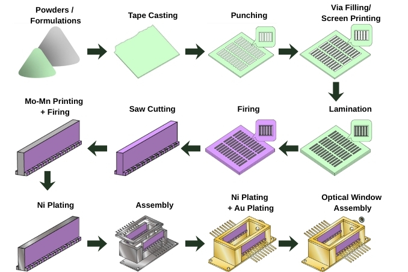
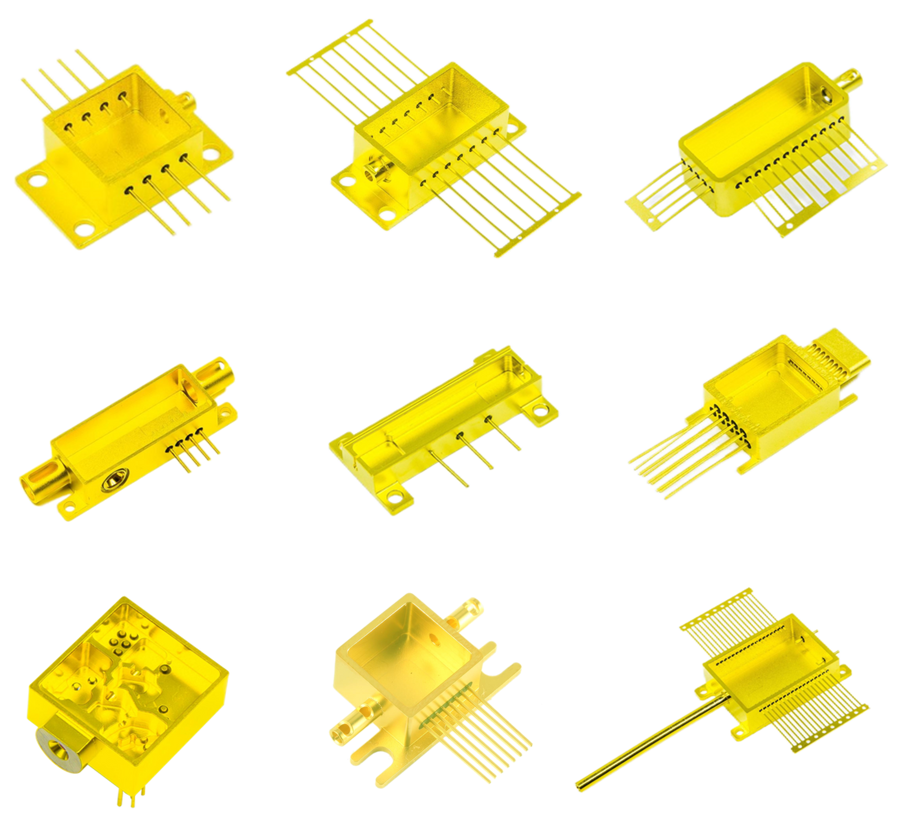
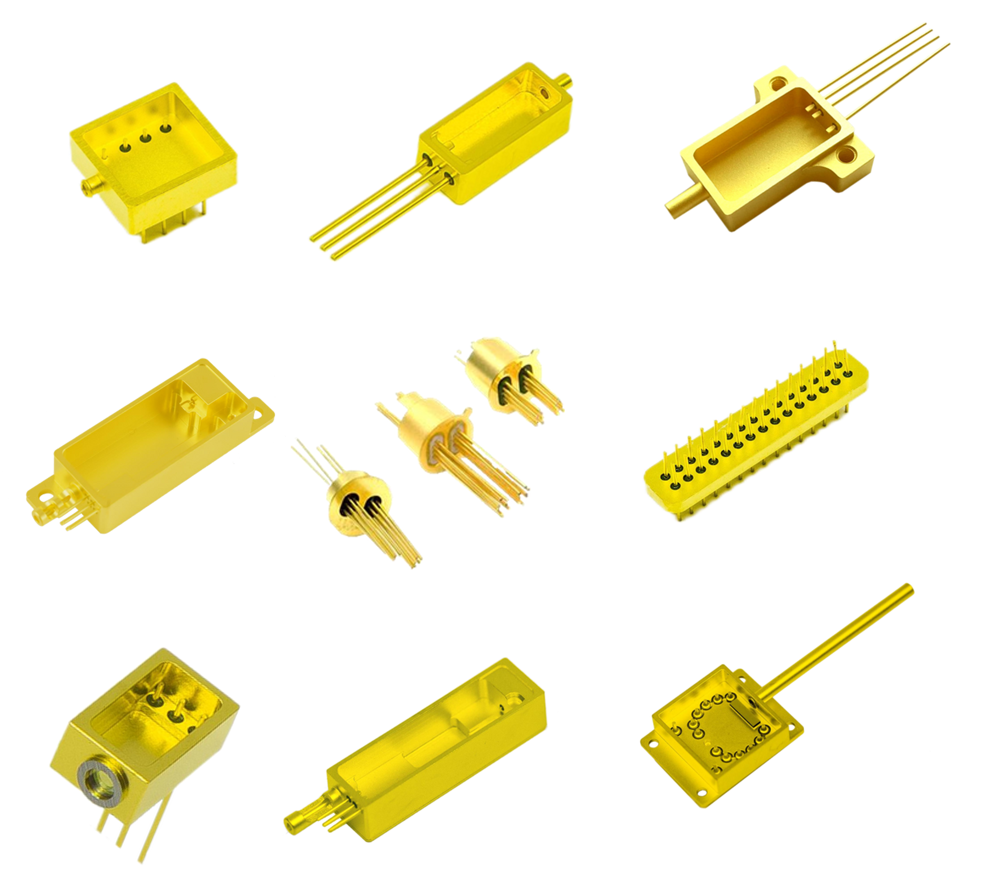
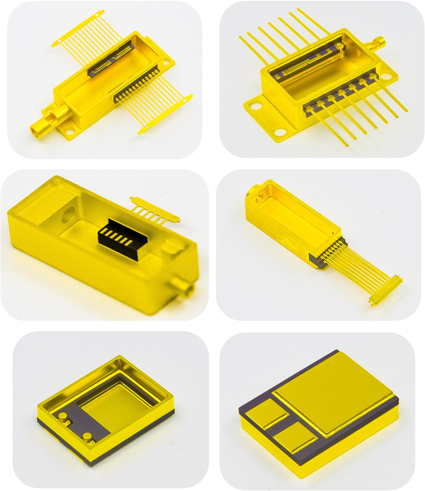

Executive Summary: The Pinnacle of Hermetic Microelectronic Packaging
High-Temperature Co-Fired Ceramic (HTCC) represents the premier manufacturing methodology for monolithic, hermetic, multilayer microelectronic packages. By co-sintering high-purity alumina (Al₂O₃) or aluminum nitride (AlN) green tapes together with refractory metals (Tungsten [W] or Molybdenum [Mo]) at temperatures exceeding 1500°C to 1600°C in a controlled reducing atmosphere, HTCC produces single-body ceramic structures with integrated internal signal routing, power planes, and internal hermetic cavities. With proven hermetic leak rates below 1×10⁻⁸ atm·cc/s via helium mass spectrometer testing, HTCC packages provide unmatched environmental isolation and long-term mechanical integrity in aerospace, defense, RF/microwave, and deep-well exploration systems.
1. What is HTCC Technology and Why is it Essential?
In modern high-reliability electronics, conventional organic substrates (such as FR-4, BT-epoxy, or polyimide) rapidly degrade when subjected to extreme operating temperatures, continuous mechanical vibration, moisture ingress, or corrosive atmospheres. Even low-temperature co-fired ceramics (LTCC) or surface-metallized ceramic substrates (like DBC or DPC) face structural limits when required to form complex three-dimensional hermetic cavities with brazed metal leadframes and glass-to-metal seals.
HTCC solves this design challenge by creating a monolithic ceramic block where conductive traces, ground planes, vertical interconnect access (vias), and multi-tier wire-bonding shelves are fused together into an impervious inorganic ceramic structure. Because the coefficient of thermal expansion (CTE) of high-purity alumina (6.5–7.2 × 10⁻⁶/K) closely matches that of critical semiconductor dice (GaAs, InP, GaN, and Si) and brazable lead alloys (such as Kovar at 5.5 × 10⁻⁶/K), HTCC packaging drastically minimizes thermomechanical shear stress across extreme thermal cycles.
HTCC Multilayer Ceramic Manufacturing Flow

2. Detailed Step-by-Step HTCC Manufacturing Process
Fabricating precision HTCC packages requires rigorous cleanroom control, specialized refractory paste formulations, and precise thermal profile engineering to accommodate ceramic firing shrinkage. The manufacturing flow consists of eight key stages:
1 Slurry Preparation & Doctor-Blade Tape Casting
Sub-micron ceramic powders (typically 90%–96% Al₂O₃ or AlN) are blended with organic binders, plasticizers, dispersants, and solvents in high-energy ball mills. The homogenized slurry is cast onto a carrier film using a high-precision doctor-blade casting machine, yielding uniform "green" (unfired) ceramic tapes with tightly controlled thicknesses ranging from 50 µm to 250 µm.
2 Precision Laser / CNC Mechanical Via Punching
Individual green tape sheets are blanked and registered. High-speed CNC mechanical punch tooling or UV laser micromachining systems punch vertical via interconnects (typically 100 µm to 200 µm diameter) and internal component cavities across each tape layer based on CAD layout files.
3 Via Filling & Refractory Conductor Screen Printing
Via holes are filled with thick-film refractory metal paste (primarily Tungsten [W] or Molybdenum [Mo]) using high-pressure stencil printers. Circuit patterns, ground shields, and wire-bond pads are subsequently screen printed on each layer using precision stainless steel mesh screens with emulsion thicknesses calibrated to achieve uniform post-sinter conductor thickness.
4 Collation, Cavity Routing & Warm Isostatic Lamination (WIP)
Printed green sheets are stacked and aligned with optical precision pinning. The assembled stack is placed in vacuum-sealed packaging and subjected to Warm Isostatic Pressing (WIP) at 60°C–80°C under hydrostatic pressures of 15–25 MPa, fusing the individual tape layers into a void-free, monolithic green block.
5 High-Temperature Co-Firing at 1500°C–1600°C
The laminated blocks undergo a two-phase sintering profile in continuous atmosphere-controlled tunnel kilns. First, organic binders are completely pyrolyzed in the burnout zone (300°C–600°C). Then, the substrate enters the peak co-firing zone at 1500°C–1600°C under a humidified reducing atmosphere of Hydrogen and Nitrogen (H₂/N₂). This prevents refractory tungsten oxidation while densifying the ceramic matrix into a hermetic, monolithic body with an isotropic shrinkage of 14%–18%.
6 Post-Sinter Metallization & Surface Finishing (Ni/Au)
Refractory tungsten exposed on outer surfaces cannot be directly soldered or wire-bonded. The fired ceramic blocks undergo chemical surface activation followed by electroplated Nickel (1.5–5.0 µm) and electrolytic or immersion Gold (0.5–2.5 µm). This provides low contact resistance, excellent Au/Al wire bondability, and long-term oxidation resistance.
7 High-Temperature Brazing of Kovar Leadframes & Seal Rings
For packages requiring external electrical leads, pin grid arrays (PGA), or hermetic seam-weldable lids, metal leadframes and Kovar (ASTM F15) seal rings are brazed onto the ceramic body using Silver-Copper (Ag-Cu 72/28) eutectic alloy in a high-temperature conveyor brazing furnace.
8 100% Hermeticity & Electrical Testing
Finished packages undergo 100% netlist continuity testing, high-voltage dielectric breakdown testing, and helium mass spectrometer gross/fine leak detection. Verification of Helium leak rate <1×10⁻⁸ atm·cc/s confirms complete hermetic integrity.
3. HTCC vs. LTCC vs. DPC vs. DBC: Comprehensive Technology Comparison
Selecting the proper ceramic technology requires balancing thermal dissipation, electrical conductivity, circuit density, and environmental hermeticity. The following engineering comparison outlines where HTCC excels relative to alternative metallization and co-fired platforms:
| Parameter | HTCC (Al₂O₃) | HTCC (AlN) | LTCC | DPC | DBC |
|---|---|---|---|---|---|
| Sintering Temperature | 1500°C – 1600°C | 1800°C – 1900°C | 850°C – 900°C | Substrate pre-fired; room temp deposition | 1065°C – 1083°C (eutectic bond) |
| Conductor Metallurgy | Tungsten (W), Molybdenum (Mo) | Tungsten (W) | Silver (Ag), Gold (Au), Cu | Electroplated Copper (Cu) + Ni/Au | Oxygen-Free Copper Foil (OFC) |
| Conductor Sheet Resistance | ~8 – 15 mΩ/□ | ~8 – 15 mΩ/□ | ~2 – 4 mΩ/□ (low loss) | <1.5 mΩ/□ (ultra-low loss) | <0.5 mΩ/□ (heavy current) |
| Thermal Conductivity (W/m·K) | 18 – 25 | 150 – 180 | 2 – 4 | 24 – 170 (matrix dependent) | 24 (Al₂O₃ base) |
| Hermetic Package Cavities | Monolithic & Brazed Lids | Monolithic & Brazed Lids | Monolithic (lower braze strength) | Surface Mount / Encapsulation Dam | Not applicable (Flat planar only) |
| Helium Hermeticity | <1×10⁻⁸ atm·cc/s | <1×10⁻⁸ atm·cc/s | <1×10⁻⁷ atm·cc/s | Module level (gasket/resin) | Module level (gasket/resin) |
| Dielectric Constant (εr @ 1 MHz) | 9.0 – 9.8 | 8.5 – 9.0 | 5.5 – 7.8 | 9.6 – 9.9 | 9.6 |
| Standard Lead Time | 6 – 8 weeks | 8 – 10 weeks | 4 – 6 weeks | ~2 weeks | ~2 weeks |
| Primary Engineering Use | Aerospace, defense, RF hermetic packages | High-power radar & laser hermetic modules | RF filters, low-loss passive integration | Optoelectronic submounts, high-frequency circuits | Automotive traction, high-power IGBT inverters |
4. Critical DFM Guidelines for HTCC Substrate & Package Designers
Designing an HTCC package requires accounting for co-firing shrinkage, layer registration, via aspect ratios, and brazing alloy run-out margins. To ensure high yields and rapid turnaround, adhere to the following Design for Manufacturability (DFM) rules:
Trace Geometries & Spacing
- Standard Minimum Trace Width: 125 µm (0.125 mm)
- Advanced Minimum Trace Width: 100 µm (0.100 mm)
- Minimum Line-to-Line Spacing: 125 µm standard (100 µm advanced)
- Edge Exclusion Margin: Minimum 0.50 mm from outer substrate perimeter
Via Interconnect Rules
- Standard Via Diameter: 150 µm to 200 µm
- Via Aspect Ratio: Max 1:1 per single tape layer
- Via-to-Via Center Spacing: Minimum 3× via diameter
- Via Capture Pad Margin: ≥50 µm radial ring around via opening
Cavity & Wire-Bond Shelf Rules
- Wire-Bond Shelf Width: Minimum 0.75 mm (1.0 mm recommended)
- Cavity Corner Radius: Minimum 0.40 mm (sharp 90° corners induce stress cracking)
- Cavity Floor Flatness: <25 µm over 10 mm length for eutectic die attach
- Step Height: Standard green tape increments (100 µm, 150 µm, 200 µm)
Brazing & Seal Ring Clearances
- Braze Pad Metallization: Mo-Mn or Tungsten with 2.5 µm Ni + 0.5 µm Au
- Braze Solder Stop Margin: 0.20 mm non-metallized ceramic margin to prevent braze bridging
- Kovar Seal Ring Thickness: 0.50 mm to 1.00 mm for laser or parallel seam welding
- Leadframe Pitch: 1.27 mm or 2.54 mm standard PGA / DIP / Flatpack spacing
5. Primary Industrial Applications for HTCC Packaging
Due to its exceptional thermal stability, impervious hermetic seal, and multi-tier wire-bonding capabilities, HTCC packaging is the standard choice in demanding mission-critical sectors:

Aerospace & Defense
Hermetic transmit/receive (T/R) radar modules, phased array antenna feeds, electronic countermeasure (ECM) transceivers, and missile guidance computer housings.

Optoelectronics & Lasers
Standard 14-pin butterfly laser packages, high-speed optical transceivers, pump laser submodules, and hermetic photodiode receiver cans.

Harsh Environments
Downhole oil and gas logging sensors, deep-sea exploration transducers, turbine pressure monitoring sensors, and high-temperature geothermal telemetry modules.
6. Quality Control, Inspection & Hermeticity Standards
Every HTCC packaging lot manufactured at Jimei Materials adheres to strict quality assurance protocols governed by our ISO 9001:2015 and ISO 14001:2015 certified facilities:
- Helium Mass Spectrometer Leak Detection: Both gross leak (fluorocarbon immersion) and fine leak (helium bombing) testing to guarantee verified hermetic leak rates <1×10⁻⁸ atm·cc/s.
- Acoustic Microscopy (C-SAM): Non-destructive ultrasonic inspection detecting internal layer delamination, voids, or micro-cracks in co-fired monolithic blocks.
- XRF Surface Plating Verification: 5-point X-ray fluorescence measurement ensuring Nickel and Gold deposit thicknesses meet IPC-4552 wire bonding and solderability standards.
- Lead Fatigue & Die Shear Testing: Mechanical destructive testing confirming braze adhesion strengths exceeding 20 kgf on brazed leadframes and seal rings.
Need Custom HTCC Multilayer Packaging?
Our engineering team provides comprehensive DFM reviews, cavity stacking optimization, and thermal modeling. Share your fabrication drawings (Gerber RS-274X, DXF, or STEP) for an engineering response within 24 hours.
Explore Related Technical Guides
HTCC Product Capabilities
Review tolerances, lead times, and materials for Jimei's HTCC offerings.
Ceramic Metallization Processes
Comparison of DPC, DBC, and refractory metallization mechanisms.
Understanding DBC Substrates
Direct Bonded Copper technology for high-current power inverters.